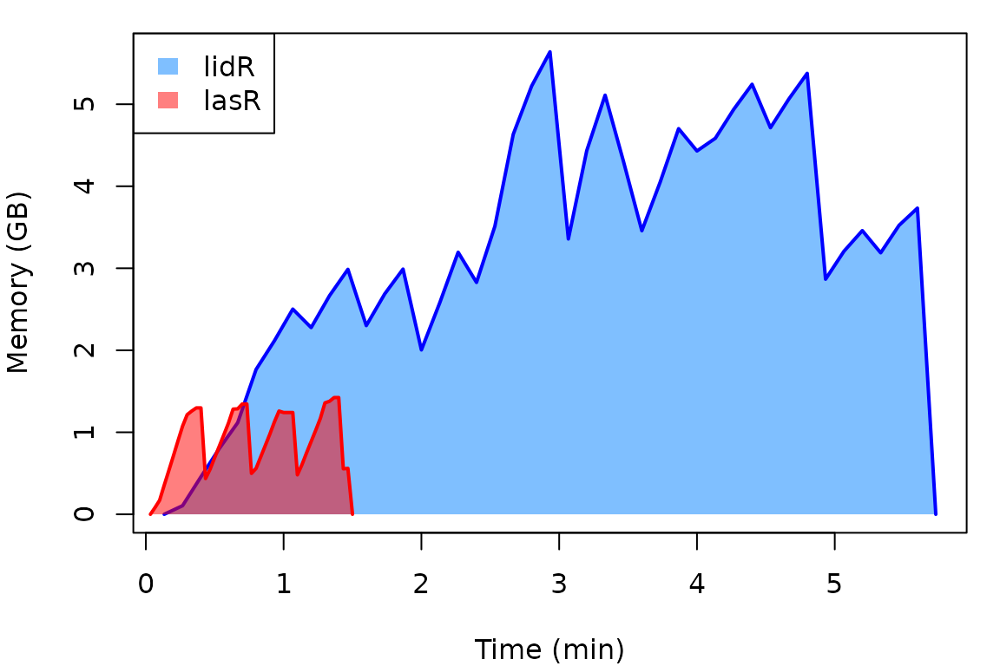

Rationnale for lasR vs. lidR
Do we need a new package in addition to lidR? Short
answer: yes!
Speed
The short answer lies in the following graph. The x-axis represents
the time to perform three different rasterizations (a CHM, a DTM, and a
density map), and the y-axis represents the amount of RAM memory used
for lidR and lasR (more details in the benchmark vignette). lasR is
intended to be much more efficient than lidR both in terms
of memory usage and computation times.

Pipeline
The second issue is the absence of a powerful pipeline engine in
lidR. Performing a task as simple as extracting and
deriving metrics for multiple inventory plots from a non-normalized
collection of files is not that easy in lidR. It is
straightforward if the point cloud is normalized, but if not, users must
write a complex custom script. With the introduction of real pipelines,
lasR enables users to do more complex tasks in an easier
way (see the tutorial vignette as well as the pipeline vignette).
R binding
Last but not least, lidR is closely tied to R and can
only exist as an R package. lasR, on the other hand, is
standalone software. The R component of lasR is merely an
API, and other APIs may exist. We plan to develop a python
package, QGIS plugin, and standalone GUI software in the
future. In its current state, lasR is only available as an
R package.
Main differences between lasR and
lidR
Pipeline
lasR introduces a versatile pipeline engine, enabling
the creation of more complex processing pipelines. Users can
simultaneously create an ABA and compute a DTM in one read pass, leading
to a significant speed-up.
Data loading
Unlike lidR, lasR does not load lidar data
into a data.frame. It is designed for efficient data
processing, with memory management at the C++ level. Consequently, there
is no read_las() function. Everything is internally and
efficiently stored in a C++ structure that keeps the data compact in
memory. However, some entry points are available to inject user-defined
R code in the C++ pipeline.
Dependencies
lasR has only 0 dependency. It doesn’t even depend on
Rcpp. lasR does not use terra and
sf at the R level for reading and writing spatial data;
instead, it links to GDAL. If terra and
sf are installed, the output files will be read with these
packages. Due to the absence of dependency on R package and the
non-loading of data as R objects, there is also no dependency on
rgl, resulting in no interactive 3D viewer like in
lidR.
Code
lasR is written 100% in C++ and contains no R code. It
utilizes the source code of lidR with significant
improvements. The major improvements observed in the benchmark are not so much in the source code
but rather in the organization of the code, i.e., no longer using
data.frame, memory management in C++ rather than R, no
processing at the R level, pipelines, and so on.
Should I use lidR or lasR?
The question is actually pretty simple to answer. If you want to
explore, manipulate, test, try, retry, and implement new ideas you have
in mind, use lidR. If you know what you want, and what you
want is relatively common (raster of metrics, DTM, CHM, tree location),
especially if you want it on a large coverage, use
lasR.
Example 1
I received 500 km² of data, and I want a CHM and a DTM.
→ Use lasR to compute both as fast as possible.
Example 2
I want to segment the trees, explore different methods, and test different parameters on small plots. Maybe I will integrate a custom step, but it’s an exploratory process.
→ Use lidR.
Example 3
I want to extract circular ground inventories and compute metrics for each plot.
→ If the dataset is already normalized, you can use either
lasR or lidR; this is pretty much equivalent.
lidR will be easier to use; lasR will be a
little bit more efficient but more difficult to use (yet the pipeline vignette contains a copy-pastable code
for that). If your dataset is not normalized, lasR will be
much simpler in that case, thanks to the pipeline processor that allows
adding a normalization stage before computing the metrics.
Example 4
I want to create a complex pipeline that computes the local shape of the points to classify roofs and wires in the point cloud. Then using a shapefile, I want to classify the water in the point cloud. To finish, I want to write new classified LAS files.
→ Use lidR. lasR does not have so many
tools. lasR is not lidR; it is much more
efficient but less versatile and has fewer tools.